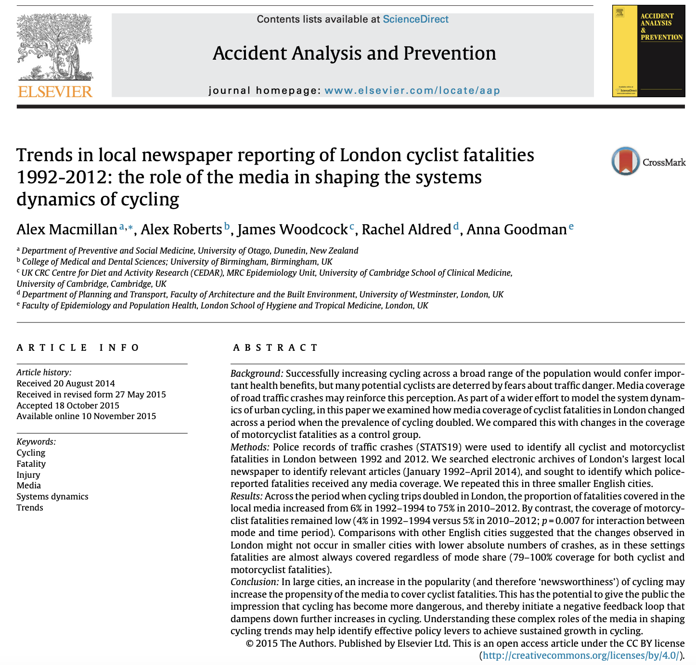

Exploration des savoirs
Les données de l’enquête
Une séance spécialisée
Objectifs
- Réfléchir à la place des données dans l’enquête
- Identifier les/des sources de données existantes
- Se faire une idée de leurs usages
- Discuter de bonnes pratiques
Déplions un peu le processus
La démarche
- Vous êtes ici → un thème d’enquête et des intuitions
- Différentes étapes sont devant vous :
- La construction progressive de questions pertinentes (exploration / anything goes)
- La stabilisation d’un protocole d’enquêtes précisant le lien entre les questions et des données qui peuvent y répondre
- L’apport de réponses
Les données comme noeud modal
Règle 101 : une enquête impose de justifier les affirmations (description d’une situation ou démonstration d’une question)
- Citer des sources
- Résultats d’autres enquêtes
- Utiliser des données
- D’apporter des nouveaux éléments
- D’amener des réponses spécifiques
Comment saisir ces données dans l’enquête ?
Par rapport à votre calendrier
- Progressivement créer un lien entre votre problématique et la démarche d’enquête pour y répondre
- La stabilisation d’un protocole
- vacances de la toussaint (25 octobre)
- Avancer un travail de réponses aux questions:
- Rendu intermédiaire avec des résultats
Fil rouge d’aujourd’hui
Vélo & Justice
- Le lien entre pratique du vélo & justive sociale sur les mobilités1
- “les bobo à vélo”
- “le vélo c’est pour les pauvres”
- Une diversité de questions sur la justice
- qui a accès aux infrastructures ?
- qui paye le prix des accidents ?
- qui bénéficie de ces mobilités ?
À la recherche des données
C’est quoi une donnée ?
Définition générique : des traces formalisées recueillies sur un phénomène1
- définition a-disciplinaire
- importance du lien avec un phénomène (juste collecter des informations ne constitue pas des données)
- la donnée n’est pas le phénomène
- nature de la “trace” recueillie : comment ? quoi ?
La donnée comme étape dans le processus de connaissance
Une forme d’entité élémentaire (ok, ce n’est pas si simple)
- données
- comme éléments collectés
- information
- comme données interprétées
- connaissances
- comme informations consolidées pour rendre compte de la réalité
Vélo & Justice
Quelles sont les données possibles ?
Listons-les
- …
- …
- …
Liste (temporaire)
Vélo & Justice
- Mon expérience personnelle
- Témoignages d’usagers à Paris
- Statistiques publiques (INSEE)
- Entretiens avec des élus/aménageurs en Ile-de-France
- Couverture par la presse
- Polémiques sur les médias sociaux (X, etc.)
- Études scientifiques sur les mobilités
- Comptage des usagers dans certaines régions
- Cartes sur la distribution des aménagements cyclables
- Densité des stations vélos dans la ville
- Chiffres de vente de vélos neuf en France
- Photos prises de différentes places en France
Est-ce que toutes ces données se valent ?
Difficile de trouver un point commun
- Format : brut ou transformé (étapes intermédiaires)
- Nature différentes (valeur, texte, image, …)
- Disponibilité (déjà collectées, à collecter)
- Mode de collecte : direct, rapporté, …
- Taille du phénomène (local, général)
- Format : small data, big data, …
- Fiabilité
Face à cette diversité
- Comment choisir les données les plus pertinentes ?
- Comment les manipuler et les stocker ?
- Comment passer des données à des résultats ?
Quelques notions pour en parler.
1. La notion de corpus
Une première distinction
- un élément unique de donnée (datum)
- chiffre de vente d’une boutique
- un témoignage
- un corpus/dataset (data) : ensemble de ces éléments
- sur une population
- sur une période
Conséquence :
- un élément renseigne sur le phénomène mesuré
- un corpus renseigne sur la régularité de ce phénomène / des phénomènes à l’échelle de la population
Corpus : construction & représentativité
Avoir un ensemble d’éléments pose la question du choix des éléments :
- Couvrir tous les éléments
- Couvrir une partie
- est-ce qu’ils sont représentatifs ?
Vélo & Justice
Une donnée : un entretien avec un cycliste
Un corpus : des entretiens avec tous les cyclistes qui ont accepté de répondre à mes questions un samedi soir rue Rivoli
Cela vaut pour tous les types de données.
2. L’enjeu de la disponibilité
- Données primaire
- construire ses données/corpus
- un gradient allant de la production complète à la mise en forme
- Données secondaire
- données déjà constitués
- multiplication des données disponibles open data
- Entre les deux
- accès à des bases de données/API
Conséquences de la disponibilité
- Données primaires : possible de les adapter à sa question mais vulnérabilité du protocole
- Données secondaires : répondent souvent à une autre question que la votre
Vélo & Justice
- Les données de comptage des vélos à Paris produits par la ville
- Compter moi-même les vélos dans une rue
3. Diversité des formats
- Accès direct aux données :
- structurées
- tableaux Excel
- base de données
- peu structurée
- des fichiers différents
- pas structuré
- dispersé dans un texte
- structurées
- Données déjà agrégées
- Tableaux déjà calculés
- Graphiques
- Uniquement des productions finalisées
- Dataviz
- Résumés
Dans l’idéal, des données structurées et peu agrégées permettant de les réanalyser pour sa question
Vélo & Justice
4. Le lien avec la question
- Aucune donnée ne peut répondre à toutes les questions
- Aucune donnée ne répond en soit à une question
Vélo & Justice
Avoir les données de fréquentation des principaux axes cyclables parisiens ne répond en soit à aucune question.
La place des données dans la démarche
- Theory-driven
- Les données arrivent après la formulation d’une hypothèse
- Data-driven
- Les réponses émergent des données (notamment, le big data)
L’enquête : un mouvement plus incrémental
Des usages différents
Le type d’usage peut varier largement dans l’enquête:
- Permet de formuler une question
- Répond directement à une question
- Eclaire un aspect de la question
Plus fondamentalements sur le phénomène
- Établir l’existence de phénomènes (il existe …)
- Établir la force d’un phénomènee distribution/force/représentativité (il représente …)
- Renforcer la robustesse d’un résultat : triangulation
Opérationalisation
- Une réflexion à mener explicitement
- Du thème à la question
- De la question à la manière d’y répondre
- Des arbitrages
- Balance coût / avantage de l’accès à des données
- Adéquation avec les objets de la question
- Adéquation avec la nature de la question
Mettre en relation les données & les questions & l’énergie
- Le coût des données :
- ces donn√©es peuvent d√©j√† exister üëç
- peuvent √™tre collect√©es avec un effort raisonnable üí™
- sont couteuses √† r√©colter üëé
Vélo & Justice
Quoi choisir pour analyser les inégalités sociales de pratique du vélo :
- Réaliser ma propre enquête par questionnaire, avec mes questions spécifiques
- Utiliser les données publiques disponibles à l’échelle des villes
Clarifier l’usage : exemple avec les entretiens
- Statut :
- primaire (réaliser) : flexibilité du contenu, couteux
- secondaire (collecter) : coût faible, thématique imposée par ceux qui ont collecté
- Moment dans l’enquête :
- Exploratoire : identifier des pistes
- Illustratif : décrire un phénomène
- Confirmatoire : vérifier une hypothèses/affirmation
- Usage :
- Rapporter l’existence d’un phénomène
- Construire une typologie des avis (saturation)
- Rendre compte de la régularité d’une représentation
Un processus itératif
- Le lien entre question & données n’est pas immédiat
- Processus itératif :
- Certaines données amènent à des questions
- Certaines questions amènent à chercher des données
- Mais
- Certaines données n’existent pas
Un appariement pragmatique et toujours partiel ; passe souvent par expliciter le protocole
5. Taille des données
- La taille des données n’est pas l’élément le plus important
- Adéquation avec la question
Ne pas hésiter à restreindre la taille et privilégier l’adéquation
6. Qualité des données
Toutes les données ne se valent pas : une qualité multidimensionnelle.
- Tracabilité de la chaine de production
- Fiabilités (producteurs douteux, ou au contraire légitime)
- Données manquantes (est-ce qu’il manque des élément)
- Erreurs dans le corpus
- Ouverture versus fermeture de l’accès
- …
Parenthèse : l’analyse dans tout ça ?
Séparation données/analyse un peu artificielle
- La valeur des données vaut par la capacité d’en faire découler des résultats
- Interdépendance collecte/données/résultats (par ex. l’expérimentation)
- Certaines analyses sont complexes et posent la question de la faisabilité (ex. statistiques)
- Des outils spécifiques…
Vélo & Justice
Si je veux tester l’hypothèse que l’association du vélo à la pauvreté est un facteur limitant de l’adoption avec une expérimentation, il faut que je m’intéresse à comment montrer la causalité en statistique et que je construise un protocole adapté…
Une analyse cadrée par les données
Les données ont une importance centrale dans la description de la réalité
Vélo & Justice
Même si j’ai de nombreux entretiens avec des cyclistes, je ne peux pas vraiment renseigner les stratégies de construction de l’infrastructure cyclable…
- Les méthodes permettent d’amener les résultats
- Mais ne peuvent pas apporter des réponses en dehors de ce que les données peuvent dire
- Avant la complexité, des méthodes simples:
- codage manuel
- statistiques avec Excel
- …
Les sources de données accessibles
Les données “facilement” accessibles
- Présentation des données
- Avec quelques manières de les utiliser
- Ce point sera traité dans une séance ultérieure plus en détail
Il n’y a pas vraiment de limites, n’hésitez pas à être créatifs
1. Documenter l’espace public : la presse
L’article de presse comme contenu complexe :
- date (évolution temporelle)
- contenu textuel (sujets)
- cadre : journal, journaliste, …
Permet une diversité d’approches :
- l’article individuel comme source
- corpus d’articles sur un sujet/période
- thèmes abordés
- acteurs récurrents
- évolutions temporelles
Accès captifs
Une presse sous droit d’auteur.
- Par des outils dédiés comme Gallicagram
- Par l’interface de portails comme Europresse
- Certains médias sont libres
Cadrage d’une tendance

Construire et extraire un corpus d’Europresse
Accès Europresse à des données payantes
Vélo & Justice
Comment aborde-t-on la question des inégalités quand on parle du vélo en région parisienne ?
Le contour du corpus :
- Définir la période
- Définir les mots-clés
- Définir les journaux concernés
- Se concentrer sur un journal
- Sur un bouquet?
Consulter vs. conserver
Possibilité de consulter sur Europresse. Mais comment conserver ?
- Collecter à la main vs. télécharger
- Des transformations nécessaires
Puis aller vers l’analyse :
- Descriptive : compter
- Plus avancée
- Visualisations
Statut des données
Ce sont des données sous droit d’auteur. Leur usage est très réglementé. Il y a une tolérance pour la recherche mais il est interdit des diffuser.
Exemple d’analyse de la presse

Mettre en forme les données
- Délimiter le corpus
- Téléchargement sous un format HTML
- Gérer la limite
- Des fichiers HTML à dater + un document de métadonnées
- Transformer en un document tabulaire
Explicit how you define the corpus
Étendre le domaine de la presse
Europresse n’est pas le seul portail sur lequel collecter des données.
Suivant la question :
- se concentrer sur les articles parus sur un site spécifique spécialisé
- récupérer les newsletters d’une organisation
Statut des données
Récupérer les évènements de la FUB pour voir lesquels mentionnent la question de la justive : https://www.fub.fr/fub/actualites
Parenthèse : la difficile question des médias sociaux
- Une source riche d’échanges
- Mais de plus en plus fermés (Twitter, Insta, etc.)
- Difficulté de collecter massiviement
- Possibilités de constituer des petits corpus
2. Production de connaissances : les métadonnées des publications scientifiques
- La cumulativité des connaissances dans la recherche scientifique passe largement par les publications scientifiques
- L’étude de ces publications scientifiques permet :
- De suivre la dynamique des connaissances
- D’identifier les acteurs clés du monde scientifique
- De reconstituer les communautés
- Depuis plus de 50 ans, des bases de méta-données
- Auxquelles se rajoutent des bases de données ouvertes
Des données multifactorielles
- Date
- Evolutions
- Affiliations
- Institutions/pays
- Mots-clés & résumés
- Domaine de recherche
- Auteurs
- Co-authorat / communautés
- Citation
- Réputation
- Financements…
Le portail Scopus
Accès par la bibliothèque de sciencespo
Vélo & Justice
Quels sont les principaux pays producteur d’une littérature sur les mobilités en vélo ?
Quelle place occupe le thème de la justice/inégalité, et quels sont les angles principaux traités dans la littérature ?
Encore une fois, la clé est le corpus
Comment délimiter un corpus pertinent :
- Approche biographique
- Se concenter sur un auteur
- Approche thématique
- Identifier un thème
- Approche institutionnelle
Ne pas hésiter à viser des petits corpus & à lire quelques articles
Récupérer les données
Une fois le corpus délimité, enjeu de récupérer les données
- Select > Export
- Format CSV ou Plain text
Permet l’analyse ensuite
3. Documenter les répartitions nationales
L’INSEE rend disponible de nombreuses données
- Notamment Catalogue des données de l’INSEE
- Agrégées et à différents niveaux spatial (ville, IRIS)
(ça vaut le coup de creuser un peu)
Vélo & Justice
- voir la structure des données
- jeter un coup d’oeil sur les données
Que faire avec ces données
- Distributions nationales :
- répartitions géographiques
- recalculer des statistiques pour des échnatillons
- faire des cartes
- Recours à des logiciels statistiques
- Excel, Jamovi
- R, Python
Avant de faire de l’analyse
Prendre le temps de regarder les données et réfléchir en amont sur les traitements envisagés
4. Documenter les attitudes & pratiques : les sondages
Que pensent les individus ? Que disent-ils de leurs pratiques ?
- Les sondages sont devenus une source importante de connaisance des comportements sociaux
- Des producteurs très différents :
- Chercheurs
- Privés
- Associations …
- De plus en plus de données disponibles
- Recherche : https://data.progedo.fr/
- Autres acteurs : par exemple https://opendata.parlons-velo.fr/
Le contenu de ces données
- Données tabulaires : questions en colonnes, réponses en ligne
- Fichiers csv, spss, autre…
- Permet une diversité d’analyses:
- Distribution
- Croisement
- Evolutions …
- Limite de la formulation des questions
5. Documenter le spatial : INSEE & IGN & OpenStreetMap
- De nombreuses données géographiques disponibles (notamment INSEE)
- Cartes de l’IGN
Analyse spatiale
- Très utile pour produire des visualisations attrayantes
- Des outils spécifiques (QGis, Philcarto, des outils online )
- Un coût d’entrée
Des corpus spécifiques : les données open data
S’adapter au corpus
- une structure/des contenus très variables
- une qualité variable
- ne jamais hésiter à explorer
Vélo & Justice
Statistiques de subventions d’achat de vélo en Île-de-France
- Distribution par villes
- A rapporter aux données INSEE ?
Une diversité d’autres sources
Avoir une conception ouverte de ce qui peut constituer une donnée utile
Collecter vos propres données
Importance du protocole
- Identifier clairement le rôle des données dans votre question
- Notamment les résultats que vous attendez
- Clarifier la population ciblée & les critères de représentativité
- Identifier les risques
- Que se passe-t-il si vous n’arrivez pas à tout collecter ?
Vélo & Justice
Je veux m’intéresser aux images du vélo dans les films. Comment je construits la population de films (uniquement ceux qui le mentionne dans le résumé ? un échantillon aléatoire ?) ? Comment ensuite je code pour chaque film (je me limite au résumé de manière automatique ? Je les regarde ?)
Importance du format de codage
- Quelle “trace” garder
- Extensive : couteux
- Condensé : perte d’information
- Construire des catégories en les testant
- Ne jamais hésiter à faire des allers-retours
Exemple des entretiens
Avant : définir le dispositif de collecte
- Clarifier le rôle des entretiens dans l’enquête (exploratoire, confirmatoire, triangulation)
- Identifier quelles sont les informations a minima nécessaires
- Le lien entre ce qui va être recueilli et les éléments utilisés pour l’analyse
- Extraction
- Définir la population visée
- Critères d’inclusion, de saturation
- Construire le dispositif de collecte (différentes méthodologies d’enquête)
- La tester
Exemple des entretiens
Après : l’enregistement/retranscription est une “trace” qu’il faut mettre en forme
- Mettre les entretiens dans un format unifié
- .docx au mieux
- Nommer les fichiers de manière systématique
- Avoir un fichier avec les métadonnées (date, interlocuteur)
- Transformer les données :
- Coder des éléments spécifiques des entretiens dans un fichier
Tout est données
Tout peut être données/corpus : tout dépend de l’usage
Vélo & Justice
Données à constituer :
- Calculer le % de pistes cyclables sur des trajets de différentes zones
- Réaliser des entretiens sur des formateurs de remise en selle de différents quartiers
- Faire une enquête par questionnaire sur une université sur les représentations du déplacement à vélo
- …
Pratique : gestion matérielle des données
En pratique :
- Comment bien collecter et conserver les données ?
- Où les stocker ?
- Comment les décrire dans ses travaux ?
- Comment travailler collaborativement avec des données ?
Bonnes pratiques numériques
- Collecter et conserver les données brutes
- Documenter le contenu dans des métadonnées
- Documenter chacune des transformations
- Consolider un corpus nettoyé avant l’analyse
Dans l’idéal, aller vers la reproductibilité
Conservation des données
Condition minimale de la reproductibilité : conserver les durées
Format et stockage des données
- Simplifier le plus possible
- .txt, .csv, …
- Faire attention à la confidentialité
- Anonymisation/pseudonymisation
- Noms clairs
- Dater les fichiers
- Système de dossier clair
Décrire les données dans ses travaux
Dans les travaux :
- Préciser la manière dont ont été constituées les données et.ou les sources
- Pour chaque corpus
- Donner des informations descriptives sur le contenu
- Les transformations qui ont été faites
- Ex. les filtrages
- Préciser les limitations s’il y en
- Données manquantes
- Artefacts/problèmes
Une éthique des données en horizon
Findable, Accessible, Interoperable, and Reusable
Aller vers l’analyse
- La valeur des données dépend des possibilités d’analyse
- Les analyses dépendent du type de données
- Trois approches :
- “à la main” : manipulation (quasi) directe des données (Excel, codage manuel, …)
- “pipeline automatisé” : usage de logiciels spécialisés (Iramuteq, VosViewer, Jamovi, …)
- “programmation” : scripts de traitement de données (Python, R)
D’ici là : de l’aide sur les données ?
- Changement de format
- Réfléchir à l’extraction
- Faisabilité de certains traitements
emilien.schultz@sciencespo.fr avec objet [EDS]
Attendus : le protocole
- Présenter une proposition de données dans le protocole
- Nécessite une phase d’exploration antérieure
- Pour les données qui feront l’objet d’un traitement
- Préciser la nature des données
- Fiche descriptive pour chaque corpus
- Leur périmètre
- Les méthodes de collecte
- Quelques informations descriptives sur leurs contenu
- Tri à plat, …
- La manière dont les données vont répondre aux questions
- Préciser la nature des données
Attendus : le rendu intermédiaire
- Stabilisation des données utilisées
- Explicitation des méthodes d’analyse utilisées
- Premières tentatives d’analyses
- Réflexion sur les visualisations/productions finales
Comment faire